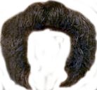

<!DOCTYPE html>
<html lang="en">

<head>
    <meta charset="UTF-8">
    <title>HTML5 Media Device Access</title>
    <script src="https://code.jquery.com/jquery-3.2.1.min.js" integrity="sha256-hwg4gsxgFZhOsEEamdOYGBf13FyQuiTwlAQgxVSNgt4="
        crossorigin="anonymous"></script>
    <meta name="viewport" content="width=device-width, initial-scale=1">
    <style>
        video,
        img {
            max-width: 100%;
            position: absolute;
        }

        .stache-image {
            position: absolute;
        }
    </style>
</head>

<body>
    <div id='image-container'>
        <video autoplay></video>
    </div>
    <script>
        (function () {
            'use strict';
            var video = document.querySelector('video'),
                canvas;

            /**
             *  generates a still frame image from the stream in the <video>
             *  appends the image to the <body>
             */
            var makeblob = function (dataURL) {
                var BASE64_MARKER = ';base64,';
                if (dataURL.indexOf(BASE64_MARKER) == -1) {
                    var parts = dataURL.split(',');
                    var contentType = parts[0].split(':')[1];
                    var raw = decodeURIComponent(parts[1]);
                    return new Blob([raw], {
                        type: contentType
                    });
                }
                var parts = dataURL.split(BASE64_MARKER);
                var contentType = parts[0].split(':')[1];
                var raw = window.atob(parts[1]);
                var rawLength = raw.length;

                var uInt8Array = new Uint8Array(rawLength);

                for (var i = 0; i < rawLength; ++i) {
                    uInt8Array[i] = raw.charCodeAt(i);
                }

                return new Blob([uInt8Array], {
                    type: contentType
                });
            }
            var addStache = function (face) {
                $(".stache-image").remove();
                var stache = $("")
                var width = (face.faceLandmarks.mouthRight.x - face.faceLandmarks.mouthLeft.x) * 1.7;
                var x = face.faceLandmarks.upperLipTop.x - (width / 2)
                var y = face.faceLandmarks.upperLipTop.y - (width / 5);
                stache.css({
                    top: y.toFixed(0) + "px",
                    left: x.toFixed(0) + "px",
                    width: width.toFixed(0) + "px",
                    transform: `rotate(${face.faceAttributes.headPose.roll.toFixed(0)}deg) rotateY(${(face.faceAttributes.headPose.yaw).toFixed(0)}deg)`
                })
                $("#image-container").append(stache);
            };
            var detectFaces = function (imageData) {
                var url =
                    "https://westcentralus.api.cognitive.microsoft.com/face/v1.0/detect?returnFaceLandmarks=true&returnFaceAttributes=headPose";
                var headers = {
                    "Ocp-Apim-Subscription-Key": "13c4086c6d354afc92342099ffc1213b",
                    "Content-Type": "application/octet-stream"
                };
                return $.ajax({
                    url,
                    method: "POST",
                    headers: headers,
                    data: makeblob(imageData),
                    processData: false
                })
            };

            function takeSnapshot() {
                var img = document.querySelector('img') || document.createElement('img');
                var context;
                var width = video.offsetWidth,
                    height = video.offsetHeight;

                canvas = canvas || document.createElement('canvas');
                canvas.width = width;
                canvas.height = height;

                context = canvas.getContext('2d');
                context.drawImage(video, 0, 0, width, height);
                //img.src = canvas.toDataURL('image/jpeg');
                detectFaces(canvas.toDataURL('image/jpeg')).then(faces => {
                    console.log(faces);
                    faces.forEach(f => addStache(f));
                    setTimeout(takeSnapshot, 100);
                })
                //$("#image-container").append(img);
            }

            // use MediaDevices API
            // docs: https://developer.mozilla.org/en-US/docs/Web/API/MediaDevices/getUserMedia
            if (navigator.mediaDevices) {
                // access the web cam
                navigator.mediaDevices.getUserMedia({
                        video: true
                    })
                    // permission granted:
                    .then(function (stream) {
                        video.src = window.URL.createObjectURL(stream);
                        video.addEventListener('click', takeSnapshot);
                        takeSnapshot();
                    })
                    // permission denied:
                    .catch(function (error) {
                        document.body.textContent = 'Could not access the camera. Error: ' + error.name;
                    });
            }
        })();
    </script>
</body>

</html>